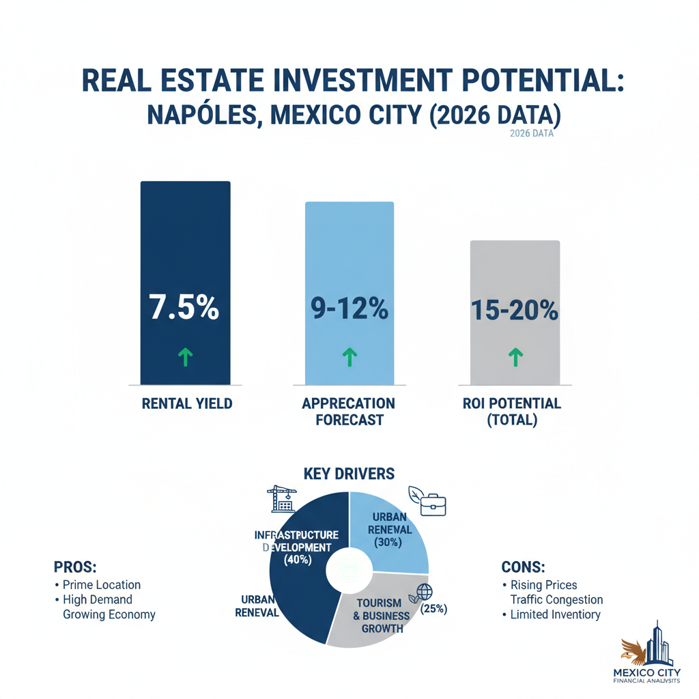

Architectural Guide 2026
Nápoles: Architectural Precision in a Strategic Urban Node
Positioned where dynamic urbanity meets calculated investment, Nápoles is more than a neighborhood. It is a finely calibrated nexus for international expatriates and institutional capital. We engineer assets here to exceed 2026's exacting standards, navigating its complex geotechnical and regulatory landscape with unparalleled expertise.

The Resident Architect's View
From my balcony in Condesa, I often look towards the architectural certainty of Nápoles. There’s a certain logic to its grid, a purposeful rhythm that contrasts with the organic flow elsewhere. I’m particularly drawn to the way the evening light catches the facades around the WTC, reflecting a different kind of ambition. It’s a neighborhood that doesn’t whisper its presence; it asserts it through clean lines and robust infrastructure, a fascinating counterpoint where efficiency and elegance converge. And after a long day, a visit to a classic taquería here, far from the tourist throngs, offers a perfect, unassuming pleasure—a subtle reminder of authentic Mexico City, embedded within a global-facing precinct.

Erik Martínez, AIA
Principal Architect. Former SHoP Architects NYC. Bringing international precision to CDMX's most complex heritage assets.
Iconic Landmarks
- World Trade Center Mexico City (WTC)
- Polyforum Siqueiros
- Plaza México Bullring
Nápoles: A Micro-Market of Macro Opportunity
Nápoles is not merely a locale; it is a meticulously defined economic and demographic frontier within Mexico City's Benito Juárez borough. Geographically, it forms a crucial bridge between the historically dense central districts and the hyper-gentrified western corridors. This precise positioning attracts a unique confluence of international expatriates, discerning digital nomads, and institutional investors who seek yield optimization in a market segment characterized by both localized volatility and unparalleled demand. Our approach is rooted in a granular, multidisciplinary understanding of compounding variables: from macroeconomic shifts and severe localized infrastructural degradation to Byzantine bureaucratic and heritage frameworks, all underscored by the highly specific geotechnical vulnerabilities inherent to the Valley of Mexico.
The Investor's Calculus: 2026 ROI in Nápoles
Entering 2026, Mexico City’s macroeconomic environment, marked by a stabilization of inflationary pressures and benchmark rates at 7% from Banxico, presents a distinct arbitrage opportunity. While domestic mortgage rates suppress local purchasing power, Nápoles stands as a 'value-central' and 'core commuting' neighborhood. Acquiring existing stock, priced between MXN 55,000 and MXN 78,000 per square meter, and executing a sophisticated 'lifestyle' renovation yields compelling returns. We project gross rental yields at the upper end of the citywide average, tracking closely to 6.0% to 6.5%, with net yields reaching 4.2% to 4.8%. This dramatically outperforms ultra-luxury areas like Polanco, where a 'prestige premium' artificially compresses yields below 4%. The strategic deployment of a 3% to 15% capital injection for renovations on existing units, in a market where new builds carry a 12% to 25% premium, represents a highly defensible financial strategy.
Geotechnical Realities: Engineering Resilience in Zone III
Nápoles sits at a precarious geological juncture, straddling Seismic Zone II and the highly vulnerable Zone III (specifically IIIa/IIIb) of Mexico City's seismic micro-zonation. This means properties here rest upon highly compressible clay deposits of the ancient Texcoco lakebed, characterized by extreme void ratios and high water content. During seismic events, these soft clays can dramatically amplify ground motion, leading to catastrophic resonance effects in mid-rise buildings. This is not a theoretical risk; it is a fundamental engineering challenge.
For luxury renovations and new constructions in Nápoles, 'standard' foundations are simply inadequate. We specialize in designing and executing foundations that employ deep end-bearing piles driven to refusal, or extensive friction pile arrays, rigidly integrated with robust structural box foundations. This engineering imperative, while increasing initial capital expenditure, is non-negotiable for long-term structural integrity. We bridge the gap between rigorous US NCARB/AIA engineering standards and local construction realities, effectively mitigating the 'Gringo Tax' by ensuring transparent, competitive pricing for specialized foundation work, rather than passing through inflated risk premiums post-commencement.
Navigating Heritage Hurdles: INBAL's Vigilance
Nápoles is an Área de Conservación Patrimonial, replete with 20th-century architectural heritage—Art Deco, Functionalist, and mid-century modern structures—meticulously catalogued by INBAL (Instituto Nacional de Bellas Artes y Literatura). Our due diligence always begins with an official dictamen to confirm a property’s status, as even minor interior alterations require exhaustive documentation and protracted approval processes from federal architects.
The case of Alabama 31 in Nápoles serves as a stark reminder: unauthorized structural modifications or the dismantling of original period ironwork (herrería) without an official Visto Bueno from INBAL results in immediate project suspension and severe municipal penalties. Facade modernization is equally stringent. Commercial awnings (toldos) must adhere to a 2.20m clearance, with chromatic palettes restricted to matte, dark finishes like Oxford gray or forest green. Signage is limited to white text, 10cm height. Most critically, replacing original window frames with modern aluminum or PVC extrusions is routinely rejected unless it perfectly mimics the original profile. We navigate these Heritage Hurdles to transform historically significant properties into high-yield assets, capturing the 'heritage premium' valued by affluent expatriates.
Water Security: Autonomous Systems for Urban Resilience
While the Sistema Cutzamala system has seen a remarkable recovery to over 87% capacity in early 2026 after a critical 2024 hydrological crisis, localized water stress remains an acute risk in Nápoles. Up to 40% of the city’s water is lost due to degraded municipal pipelines and distribution failures, meaning consistent hydrostatic pressure for high-density apartment blocks cannot be guaranteed. To insulate your asset from this systemic vulnerability, independent, high-capacity water storage is mandatory. We integrate robust cistern systems with a minimum 4,000 to 5,000 liters of storage for a single luxury unit, capable of bridging multi-day municipal shutoffs (tandeos). This is paired with dedicated hydropneumatic pump systems to maintain internal pressure, and multi-stage filtration (sediment, activated carbon, UV sterilization) to ensure potable water for consumption and high-end appliance protection.
Architectural Feasibility: Napoles 2026
| Project Type | Avg. Permit Time | Seismic Risk Level | Conservation Status |
|---|---|---|---|
| Renovated 'Lifestyle' Property | 6 - 12 Months | Moderate (Permitting, Geotechnical Survey) | High-Yield Arbitrage |
| New Multi-Unit Build (HC/3/20) | 12 - 18 Months | High (Deep Piles, Public Space Contributions) | Strict (SEDUVI/DRO) |
| INBAL Heritage Restoration | 12 - 24 Months | Extreme (Protracted Approvals, Material Sourcing) | Highly Restrictive (INBAL *Visto Bueno*) |
Acoustic Insulation & Connectivity Mastery
Nápoles, bordered by major arterial highways and event venues, requires profound urban acoustic mitigation. Our renovations incorporate laminated double-glazing with asymmetrical pane thicknesses and interior partitions decoupled from the primary structure using resilient channels and high-density mineral wool. This ensures a tranquil interior, necessitated by the perpetual sealing of windows, which we counter with whisper-quiet mechanical ventilation and mini-split HVAC systems with active air purification. For connectivity, we hardwire uninterruptible power supply (UPS) systems into the telecommunications architecture, coupled with whole-house surge protection, guaranteeing zero-downtime internet even amidst the local grid’s voltage fluctuations.
The Nomad Layer: Performance-Driven Design
Our interior philosophy for Nápoles centers on the 'Nomad Layer'—spaces optimized for the executive expatriate. This means smart-home integration, high-end acoustics, and localized aesthetic markers that speak to sophisticated global tastes while grounding the residence in Mexico City. We select materials for their durability, low maintenance, and acoustic properties, creating environments that are both highly functional and aesthetically refined, providing respite from the city's intensity.
The Napoles Cheat Sheet
- Best Streets Filadelfia, Nueva York, Alabama (for heritage context)
- Zoning Code HC/3/20 or H/4/20 (20% *área libre* minimum)
- Est. Cost / m² MXN 55,000 - 78,000/m² (acquisition) + 8-15% renovation budget
- Best Coffee Avenida de los Insurgentes offers diverse high-end options, or a hidden local spot on Kansas for genuine character.
- Local Quirk The specific urban soundscape, where the persistent ringing of gaseros coexists with the distant rumble of the Viaducto.
The Challenge
The primary challenge in Nápoles is navigating the severe local infrastructural degradation, from electrical grid instability and chronic water stress to the profound urban noise pollution that impacts habitability.
Furthermore, the administrative burden of securing a Manifestación de Construcción Tipo B or C is significant, with actual permit approvals frequently languishing for 6 to 12 months in Benito Juárez, exacerbated by intense neighborhood activism and scrutiny following the 'cartel inmobiliario' controversies.
Our Solution
We engineer complete infrastructural autonomy into our projects—high-capacity cisterns with multi-stage filtration, UPS systems for power stability, and sophisticated acoustic dampening. This renders properties resilient to external urban turbulence, commanding a premium from discerning tenants.
Our strategy involves retaining highly reputable Notario Públicos and conservative, credentialed DROs (Director Responsable de Obra) from project inception. This institutional firewall transforms abstract legal and structural risks into managed, quantifiable operational variables, guaranteeing long-term asset preservation and permit compliance, even when facing proactive community monitoring and PAOT complaints.


Planning to Buy?
Don't sign a contract before a technical audit. We offer pre-purchase structural assessments in Napoles.
2026 Cost Report
Get our detailed breakdown of current labor and material costs for luxury residential in CDMX.
Start Your Napoles Legacy
NYC Precision. Mexican Craft. We eliminate uncertainty for international investors.